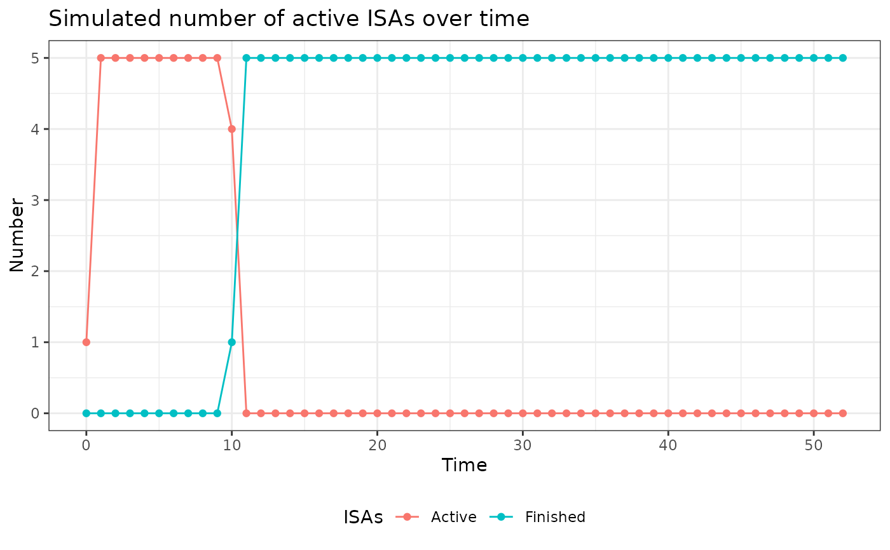

Rules for ISA starting times of class lNewIntr
Usage
new_lNewIntr(
fnNewIntr = function(lPltfTrial, lAddArgs) {
},
lAddArgs = list()
)
validate_lNewIntr(x)
lNewIntr(nMaxIntr, nStartIntr, vArrTimes = NULL)
# S3 method for class 'lNewIntr'
plot(
x,
dCurrTime = 1:52,
cIntrTime = "fixed",
dIntrTimeParam = 10,
nIntrStart = 1,
...
)
# S3 method for class 'lNewIntr'
summary(object, ...)Arguments
- fnNewIntr
Function that checks how many new ISAs should be added to the platform
- lAddArgs
Further arguments used in fnNewIntr
- x
An object of class lNewIntr
- nMaxIntr
Maximum number of interventions
- nStartIntr
Number of interventions to start with
- vArrTimes
Vector of arrival times for interventions
- dCurrTime
Vector of current time steps (default 1:52)
- cIntrTime
Type of intervention time: "fixed" or "random"
- dIntrTimeParam
Parameter for intervention time (fixed value or probability)
- nIntrStart
Number of ISAs at start
- ...
Additional arguments (not used)
- object
An object of class lNewIntr
Examples
x <- lNewIntr(4,4)
validate_lNewIntr(x)
plot(x)

summary(x)
#> Specified inclusion function:
#> [1] "if (is.null(lAddArgs$vArrTimes)) {\n if (lPltfTrial$lSnap$dCurrTime == 1) {\n dAdd <- lAddArgs$nStartIntr\n }\n else if (lPltfTrial$lSnap$dExitIntr > 0 & length(lPltfTrial$lSnap$vIntrInclTimes) < lAddArgs$nMaxIntr) {\n dAdd <- min(lAddArgs$nMaxIntr - length(lPltfTrial$lSnap$vIntrInclTimes), lPltfTrial$lSnap$dExitIntr)\n }\n else {\n dAdd <- 0\n }\n} else {\n dAdd <- sum(lPltfTrial$lSnap$dCurrTime == lAddArgs$vArrTimes)\n}"
#>
#> Specified arguments:
#> $nMaxIntr
#> [1] 4
#>
#> $nStartIntr
#> [1] 4
#>
#> $vArrTimes
#> NULL
#>